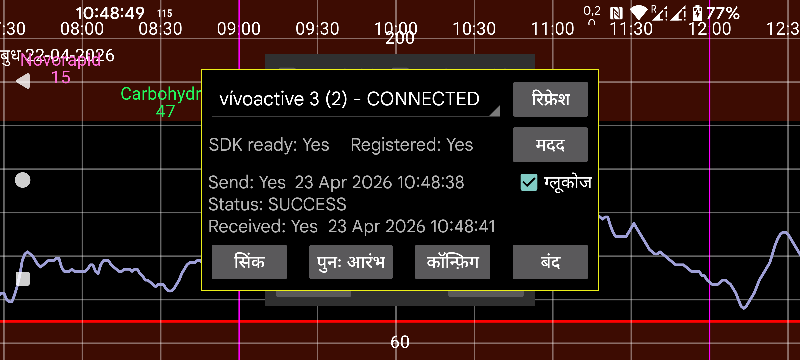

ar be de es fr hi it ja ko nl pl pt ru tr uk uz zh en
Kerfstok (https://apps.garmin.com/hi-IN/apps/b6348ccc-86d8-4780-8013-d9e19fed5260 (https://www.juggluco.nl/Kerfstok/index.html भी देखें) उन Garmin स्पोर्ट घड़ियों के लिए एक वॉच ऐप है जो तृतीय-पक्ष ऐप्स की अनुमति देती हैं। 1.6.0 से टचस्क्रीन के बिना घड़ियों के लिए भी। Kerfstok के निम्नलिखित उपयोग हैं:
संख्याएं दर्ज करें और उन्हें Juggluco के साथ आदान-प्रदान करें;
Juggluco से प्राप्त स्ट्रीम ग्लूकोज मान प्रदर्शित करता है;
खेल के दौरान यह ग्लूकोज मान प्रदर्शित करता है, साथ ही गति और दूरी भी दिखाता है। गतिविधि रिकॉर्ड की जाएगी और इसे Garmin के connect ऐप में प्रदर्शित किया जा सकता है।
यह वॉच ऐप Juggluco से ब्लूटूथ के माध्यम से मात्राएं आदान-प्रदान करने और आपके वर्तमान ग्लूकोज मान को लगातार प्रदर्शित करने के लिए कनेक्ट हो सकता है।
समस्या निवारण:
पहले, आपकी घड़ी का नाम "CONNECTED" दिखाया जाना चाहिए। यदि नहीं, तो Garmin के Connect ऐप में समस्या हल करें। दूसरा, आपकी घड़ी पर Kerfstok शुरू होना चाहिए।
कभी-कभी घड़ी और फोन के बीच कनेक्शन बाधित होता है।
यदि भेजने की स्थिति FAILURE_DURING_TRANSFER है, तो आप निम्नलिखित में से एक या सभी कर सकते हैं:
- ब्लूटूथ बंद और चालू करें, और उसके बाद पुनः आरंभ दबाएं;
- घड़ी को रीबूट करें (लगभग हमेशा सफल, पर कभी-कभी इसे कई बार करना पड़ता है);
- फोन को रीबूट करें (अंतिम विकल्प)।
अन्य समस्याओं के लिए Garmin connect ऐप को फोर्स स्टॉप करना, उसे फिर से शुरू करना और पुनः आरंभ दबाना उपयोगी हो सकता है।
यदि एक उचित कनेक्शन है और किसी कारण से घड़ी और फोन पर मात्राएं सिंक से बाहर हैं, तो आप सिंक दबा सकते हैं, ताकि वे एक दूसरे को वे संख्याएं भेज सकें जो उन्होंने अभी तक नहीं भेजी हैं।
कभी-कभी "कतार भेजें" नाम का एक बटन दिखाया जाता है; इसका मतलब है कि कुछ संदेश हैं जो अभी तक घड़ी को नहीं भेजे गए हैं। सामान्यतः वे समय पर स्वचालित रूप से भेजे जाएंगे, पर कभी-कभी यह बाधित हुआ और कतार भेजें दबाने से भेजना जारी रहेगा। पर यदि यह टूटे कनेक्शन के कारण नहीं भेजा गया था तो इसका बहुत कम लाभ है। चल रहे लेनदेन के दौरान कतार भेजें दबाना कनेक्शन को तोड़ सकता है।
कभी-कभी जब “कतार भेजें” दिखाया जाता है, तो एक कनेक्शन समस्या होती है जो यह बनाती है कि संदेश केवल फोन से घड़ी को भेजे जाते हैं, दूसरी दिशा में नहीं। यह तब होता है जब “प्राप्त” के बाद का समय “भेजें” के बाद के समय से पुराना होता है। इसे ठीक करने के लिए, आपको फिर से निम्नलिखित में से एक या सभी एक या कई बार करना होगा:
पुनः आरंभ दबाएं;
Garmin Connect ऐप को फोर्स स्टॉप करें और उसे फिर से शुरू करें और पुनः आरंभ दबाएं;
ब्लूटूथ बंद और चालू करें;
घड़ी को रीबूट करें;
फोन को रीबूट करें।
मेरे कुछ मामलों में उपरोक्त चरण उठाने के बाद भी कनेक्शन समस्याएं बनी रहीं, और समस्या Garmin Connect को पुनः इंस्टॉल करके या Garmin Connect के app info में Storage साफ़ करके और इसे फिर से खोलकर हल हो गई। क्योंकि Garmin Connect डेटा को इंटरनेट सर्वर पर संग्रहीत करता है, आप बिना डेटा खोए इसे पुनः इंस्टॉल कर सकते हैं। डेटा साफ़ करने के बाद मुझे फिर से लॉग इन करने की भी आवश्यकता नहीं थी, मुझे केवल बहुत सी अनुमतियाँ देनी थीं।
रिफ्रेश इस डायलॉग को नई जानकारी के साथ फिर से लिखता है (उदाहरण के लिए पुनः आरंभ या सिंक के बाद)।
"ग्लूकोज" चेक करना यह निर्धारित करता है कि ग्लूकोज मान घड़ी को भेजे जाते हैं या नहीं।
कॉन्फ़िग: डार्क मोड, शॉर्टकट और ID सेट करें।
चेतावनी: Juggluco का उपयोग केवल एक Kerfstok के साथ किया जा सकता है। आप Juggluco को कई घड़ियों पर या एक घड़ी और एक बाइक कंप्यूटर पर Kerfstok से कनेक्ट नहीं कर सकते।